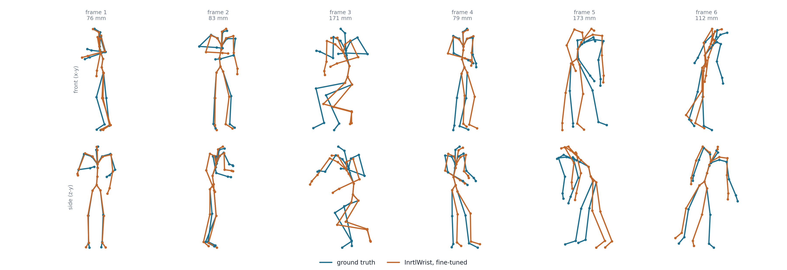
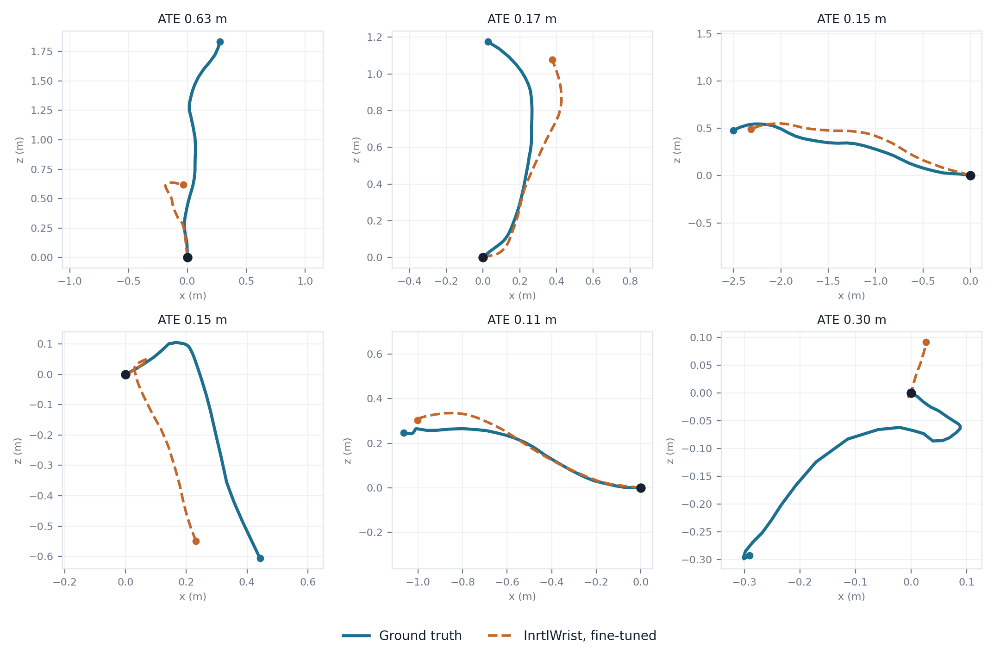
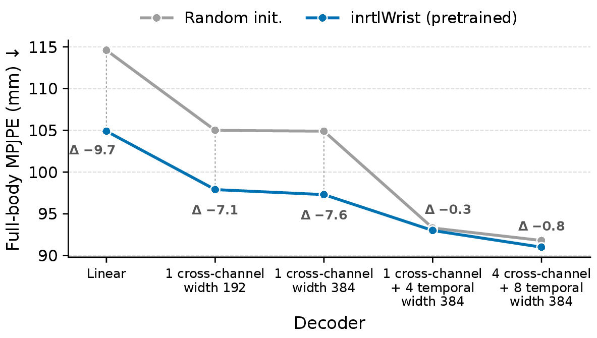
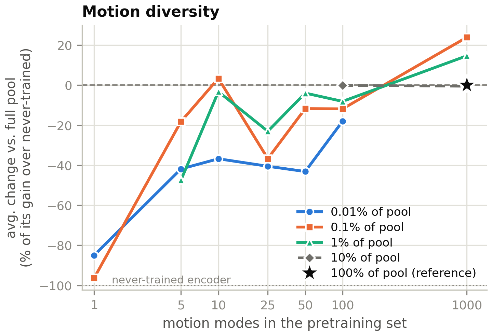

Benchmarking wrist IMU representations across kinematic, semantic and clinical tasks.
BenchmarkTen tasks from eight datasets in six families: pose, odometry, microgesture, IMU–text retrieval, Parkinson's disease and activity recognition, all from one wrist. With the ten pretraining sources, 3,855 hours of released wrist IMU data.
ModelInrtlWrist, a masked autoencoder pretrained at scale on unlabeled recorded and simulated wrist motion, is best or joint-best under frozen probing on nine of ten tasks.
Transfer42 source–target pairs and joint-training experiments show which supervision helps another task and which costs it.
Ten evaluations · 8 datasets · 6 families 3,855 hours of wrist IMU data across the 18 pretraining and evaluation datasets
PoseNymeria · cm / mmFive right-arm joints and 23 SMPL body joints from the real right-wrist IMU.
OdometryNymeria · ATE mPelvis velocity in the wrist frame, integrated into a trajectory.
MicrogestureOpenWatch · clip F1Five hand gestures plus background from 1 s windows.
IMU–textHumanML3D · R@1Retrieve the caption from simulated wrist motion, and the reverse.
Parkinson'sPADS · participant F1Healthy, Parkinson's disease or differential diagnosis for 469 participants.
Activity4 datasets · macro-F1HHAR, MHEALTH, PRISM and TransfHAR, 6 to 60 classes.
NymeriaOpenWatchHumanML3DPADSHHARMHEALTHPRISMTransfHARfrozen probefine-tunefrom scratcharm pose · cmMPJPE · mmATE · mclip macro-F1Recall@1participant macro-F1InrtlWristLIMU-BERTSimMTMFOCALRelConSSL-Wearablesaccelerometergyroscope6 channels0.32 s patches10.24 s windows197,094 windows21 M parametersNymeriaOpenWatchHumanML3DPADSHHARMHEALTHPRISMTransfHARfrozen probefine-tunefrom scratcharm pose · cmMPJPE · mmATE · mclip macro-F1Recall@1participant macro-F1InrtlWristLIMU-BERTSimMTMFOCALRelConSSL-Wearablesaccelerometergyroscope6 channels0.32 s patches10.24 s windows197,094 windows21 M parameters
How it works
One harness, from task card to transfer map
Every number comes from one registry-driven harness: a task card per task and an encoder card per model.
01 · Benchmark
Build the evaluation suite
Ten tasks, eight datasets, six families. One task card per task fixes the inputs, decoder, split rule, metric and training budget, and every pretraining corpus is audited against every evaluation set.
02 · Pretrain, probe, fine-tune
Compare objectives on equal footing
Six self-supervised objectives on one 12-layer, 21 M-parameter ViT and one corpus of 197,094 unlabeled wrist windows. Each encoder is scored under frozen probing, fine-tuning and training from scratch with the same decoder.
03 · Transfer
Measure what transfers
Seven supervised source tasks evaluated on six targets each, plus joint-training pairs, separate broadly useful pretraining from complementary task supervision.
The question
Does one wrist representation serve every motion task?
Joint rotations, metric velocity, a gesture label, a sentence, a diagnosis. Each task sees a different shadow of the same movement. IMU-Bench asks whether those views share a representation.
01Many views of one motion
A smartwatch accelerometer and gyroscope capture locomotion, articulated limb motion, fine hand gestures and clinically relevant motor signs. Activity recognition, pose estimation, odometry, retrieval and clinical assessment each read a different part of that signal, and each offers only a partial view.
02Existing benchmarks stop at classification
Self-supervised wearable models are usually tested on activity recognition or health classification under their own splits, decoders and pretraining corpora. That leaves open whether the same features support articulated joint rotations, metric velocity and motion–language correspondence, and whether supervision for one target helps or harms another.
03Two questions under one protocol
How broadly do pretrained wrist features transfer, and is supervision for one task complementary to another? The benchmark fixes the backbone, one light decoder per task, the splits, the training budget and the model-selection rule, so differences come from the representation rather than the protocol.
Leaderboard
Two tracks: a controlled comparison and an open board
The controlled track fixes the corpus and the 21 M-parameter backbone, so a row differs from another only in its pretraining objective. The open track takes any encoder, trained on any data at any scale, including released models from other groups. Both run the same ten task cards. Bold marks the best value in a column within the track, ties included; reference rows do not compete.
With the corpus and the model held fixed, which pretraining objective gives the most useful wrist-IMU representation? Pretrain only on the released IMU-Bench corpus (197,094 unlabeled wrist windows; built with scripts/build_multidata_cache.py from the sources listed in DATASETS.md). Use the shared backbone, a 12-layer, width-384 ViT over 0.32 s patches (21 M parameters, imu_lm/models/ViT1D), and the shared pretraining trainer (scripts/run_pretrain.py). At most 160,000 pretraining updates, checkpoint selected on the corpus validation split. Only the objective (loss, views, masking, heads discarded after pretraining) is free.
Encoder
Arm posecm ↓
Full-body poseMPJPE mm ↓
OdometryATE m ↓
Gestureclip F1 ↑
IMU–textR@1 ↑
Parkinson'sparticipant F1 ↑
Activitymean F1 ↑
Mean rank↓
InrtlWrist (benchmark authors)
8.14
97.9
0.200
64.7
27.9
55.2
57.8
1.21
LIMU-BERT
8.14
98.5
0.208
61.7
24.9
50.5
56.2
2.07
SSL-Wearables
8.42
101.7
0.220
54.7
24.8
57.4
55.1
3.00
SimMTM
8.47
103.6
0.224
55.9
17.2
48.7
53.1
4.00
RelCon
8.50
104.3
0.215
38.5
13.2
40.5
35.4
5.14
FOCAL
8.71
108.4
0.240
48.1
8.6
40.7
44.2
5.57
Never-trained encoder, frozen (decoder alone)
8.46
105.0
0.233
36.4
9.5
51.7
26.2
Raw input, 0 layers (decoder alone)
8.51
106.4
0.256
11.4
0.5
12.6
5.6
Same backbone, trained from scratch
8.21
92.7
0.162
60.8
23.2
29.9
53.3
Encoder
Arm posecm ↓
Full-body poseMPJPE mm ↓
OdometryATE m ↓
Gestureclip F1 ↑
IMU–textR@1 ↑
Parkinson'sparticipant F1 ↑
Activitymean F1 ↑
Mean rank↓
InrtlWrist (benchmark authors)
8.01
88.1
0.154
54.2
38.8
51.9
63.9
1.43
LIMU-BERT
8.18
89.7
0.158
57.3
36.6
46.0
56.1
2.93
SSL-Wearables
8.57
90.6
0.166
58.3
34.5
48.7
56.7
3.14
SimMTM
8.44
92.9
0.163
61.9
32.4
46.8
52.1
3.71
RelCon
8.55
92.1
0.167
42.7
30.0
49.1
52.8
4.29
FOCAL
8.66
95.9
0.177
39.3
22.4
46.3
56.1
5.50
Same backbone, trained from scratch
8.21
92.7
0.162
60.8
23.2
29.9
53.3
Being evaluated: DINO (10 of 20 cells); I-JEPA (4 of 20 cells).
What is the best wrist-IMU encoder that anyone can train or download, at any scale? Any architecture, size, pretraining corpus and objective. Weights must be public, or released with the submission. The pretraining corpus must not contain any recording from the evaluation splits of the ten tasks; declare it in the encoder card (pretrain_data) so it can be audited. Same raw input, task cards and scorers as the controlled track. Input normalisation and other preprocessing inside the encoder are the submitter's choice (normalize_method in the card).
Encoder
Arm posecm ↓
Full-body poseMPJPE mm ↓
OdometryATE m ↓
Gestureclip F1 ↑
IMU–textR@1 ↑
Parkinson'sparticipant F1 ↑
Activitymean F1 ↑
Mean rank↓
InrtlWrist (benchmark authors)21 M · IMU-Bench corpus, 197,094 windows (recorded + simulated wrist motion) · released weights · run by benchmark authors
8.14
97.9
0.200
64.7
27.9
55.2
57.8
1.14
NormWear (Luo et al., 2024)136 M · ~2.5 M segments of PPG, ECG, EEG, GSR and IMU signals · released weights · run by benchmark authors, from the released weights · five cells ran under a step cap (full-body fine-tune, both odometry cells and both Parkinson's cells)
8.39
107.7
0.295
43.8
15.5
56.6
38.2
1.86
Never-trained encoder, frozen (decoder alone)
8.46
105.0
0.233
36.4
9.5
51.7
26.2
Raw input, 0 layers (decoder alone)
8.51
106.4
0.256
11.4
0.5
12.6
5.6
Same backbone, trained from scratch
8.21
92.7
0.162
60.8
23.2
29.9
53.3
Encoder
Arm posecm ↓
Full-body poseMPJPE mm ↓
OdometryATE m ↓
Gestureclip F1 ↑
IMU–textR@1 ↑
Parkinson'sparticipant F1 ↑
Activitymean F1 ↑
Mean rank↓
InrtlWrist (benchmark authors)21 M · IMU-Bench corpus, 197,094 windows (recorded + simulated wrist motion) · released weights · run by benchmark authors
8.01
88.1
0.154
54.2
38.8
51.9
63.9
1.00
NormWear (Luo et al., 2024)136 M · ~2.5 M segments of PPG, ECG, EEG, GSR and IMU signals · released weights · run by benchmark authors, from the released weights · five cells ran under a step cap (full-body fine-tune, both odometry cells and both Parkinson's cells)
8.54
102.2
0.297
21.0
15.7
43.1
27.8
2.00
Same backbone, trained from scratch
8.21
92.7
0.162
60.8
23.2
29.9
53.3
Being evaluated: HarNet5 (Yuan et al., 2024) (16 of 20 cells); Inertia-1 PatchTST-S (Xu et al., 2026) (12 of 20 cells); Inertia-1 AR-Transformer-S (Xu et al., 2026) (12 of 20 cells). InrtlWrist was developed by the benchmark authors together with the task cards. The cards' decoders, budgets and selection rules are shared unchanged by every row, are not tuned per encoder, and may not be tuned by submitters either. Rows marked "from the released weights" were run by the benchmark authors with the other groups' public checkpoints and preprocessing; their authors are welcome to resubmit. † No official checkpoint has been released; pretrained by us with the authors' code and recipe, and replaced by the official weights when they appear. Not on the board yet: RelCon (Xu et al., ICLR 2025): weights not released ("we cannot release the pre-training dataset or the associated model weights", github.com/maxxu05/relcon); the objective is in the controlled track as relcon_5src. Inertia-1 (Xu et al., 2026), official checkpoints: code only as of 2026-10-14 (github.com/yang-ai-lab/Inertia-1); our NHANES reproduction is in the open track and will be replaced by the official weights once released. IMUDINO: no public code or weights found as of 2026-10-14.
Activity is the mean macro-F1 over HHAR, MHEALTH, PRISM and TransfHAR. Gesture and Parkinson's are the OpenWatch test split and the PADS participant metric. Mean rank is taken over the seven columns within a track and protocol. Secondary metrics for every cell are in the released result files.
Per-task Leaderboard
Every metric of every encoder on each task, as in the paper appendix. One training seed per cell. Task-specific systems are listed for orientation and are not ranked.
Encoder
pos err (cm) ↓
ang err (°) ↓
Frozen probe
InrtlWrist (Ours)
8.14
9.89
LIMU-BERT
8.14
9.86
SimMTM
8.47
10.27
FOCAL
8.71
10.70
RelCon
8.50
10.41
SSL-Wearables
8.42
10.14
InrtlWrist, plain attention
8.36
10.17
InrtlWrist, accelerometer only
8.76
10.61
Random frozen encoder
8.46
10.35
Raw input, 0 layers
8.51
10.30
Fine-tune
InrtlWrist (Ours)
8.01
9.86
LIMU-BERT
8.18
9.97
SimMTM
8.44
10.29
FOCAL
8.66
10.69
RelCon
8.55
10.53
SSL-Wearables
8.57
10.58
InrtlWrist, plain attention
8.19
10.06
InrtlWrist, accelerometer only
8.88
10.80
Scratch
8.21
9.89
Task-specific systems (not ranked)
MobilePoser (Xu et al.)
9.74
24.28
IMUPoser (Mollyn et al.)
10.15
23.82
Arm pose: Nymeria real right-wrist IMU → 5-joint right-arm chain rotations. One training seed per cell. Task-specific systems are listed for orientation and are not ranked (see the paper appendix). MobilePoser and IMUPoser also read wrist orientation, and must predict the ancestor joints that our arm-pose metric supplies.
Encoder
MPJPE (mm) ↓
Frozen probe
InrtlWrist (Ours)
97.85
LIMU-BERT
98.55
SimMTM
103.65
FOCAL
108.41
RelCon
104.29
SSL-Wearables
101.67
InrtlWrist, plain attention
99.96
InrtlWrist, accelerometer only
102.79
Random frozen encoder
104.99
Raw input, 0 layers
106.36
Fine-tune
InrtlWrist (Ours)
88.11
LIMU-BERT
89.74
SimMTM
92.91
FOCAL
95.92
RelCon
92.15
SSL-Wearables
90.61
InrtlWrist, plain attention
88.38
InrtlWrist, accelerometer only
94.42
Scratch
92.72
Task-specific systems (not ranked)
MobilePoser (Xu et al.)
91.88
IMUPoser (Mollyn et al.)
96.87
Full-body pose: Nymeria real right-wrist IMU → 23-joint SMPL body (root excluded). One training seed per cell. Task-specific systems are listed for orientation and are not ranked (see the paper appendix). MobilePoser and IMUPoser also read wrist orientation.
Encoder
ATE (m) ↓
vel MSE ↓
Frozen probe
InrtlWrist (Ours)
0.1999
0.02732
LIMU-BERT
0.2078
0.02856
SimMTM
0.2240
0.03064
FOCAL
0.2404
0.03334
RelCon
0.2153
0.02893
SSL-Wearables
0.2205
0.03078
InrtlWrist, plain attention
0.2104
0.02892
InrtlWrist, accelerometer only
0.2296
0.03232
Random frozen encoder
0.2334
0.03217
Raw input, 0 layers
0.2558
0.03720
Fine-tune
InrtlWrist (Ours)
0.1541
0.01824
LIMU-BERT
0.1576
0.01885
SimMTM
0.1629
0.01946
FOCAL
0.1767
0.02218
RelCon
0.1672
0.02037
SSL-Wearables
0.1656
0.02030
InrtlWrist, plain attention
0.1569
0.01880
InrtlWrist, accelerometer only
0.1898
0.02558
Scratch
0.1618
0.01940
Task-specific systems (not ranked)
TLIO
0.1874
0.02978
Air-IO
0.1803
0.03148
Odometry (wrist frame): Nymeria real right-wrist IMU → pelvis velocity in the wrist (FLU) frame. Task-specific systems are listed for orientation and are not ranked (see the paper appendix).
Encoder
clip F1 (test) (%) ↑
clip acc (test) (%) ↑
win F1 (test) (%) ↑
win acc (test) (%) ↑
Frozen probe
InrtlWrist (Ours)
64.7
67.8
49.4
53.6
LIMU-BERT
61.7
60.9
49.8
51.9
SimMTM
55.9
57.5
48.3
50.6
FOCAL
48.1
47.1
36.9
38.3
RelCon
38.5
39.1
39.9
42.5
SSL-Wearables
54.7
56.3
45.6
48.9
InrtlWrist, plain attention
63.9
66.7
49.4
53.3
InrtlWrist, accelerometer only
62.2
64.4
49.1
51.5
Random frozen encoder
36.4
40.2
31.9
35.4
Raw input, 0 layers
11.4
51.7
11.4
51.7
Fine-tune
InrtlWrist (Ours)
54.2
65.5
48.0
59.4
LIMU-BERT
57.3
67.8
49.1
59.4
SimMTM
61.9
69.0
50.5
59.8
FOCAL
39.3
49.4
39.5
47.5
RelCon
42.7
57.5
38.3
51.0
SSL-Wearables
58.3
66.7
53.1
60.7
InrtlWrist, plain attention
70.3
74.7
56.2
63.6
InrtlWrist, accelerometer only
60.6
67.8
49.7
59.2
Scratch
60.8
69.0
45.1
56.5
Task-specific systems (not ranked)
Mix-Token (reimpl.)
50.0
62.1
49.0
59.2
NormWear-Base (first-party)
45.3
51.7
42.5
50.4
Microgesture recognition on OpenWatch (five gestures plus background, real recordings, held-out test split), our encoder against training from scratch and the task-specific systems.
Gallery of 100
Full gallery
Encoder
R@1 mean ↑
i2t R@1 ↑
t2i R@1 ↑
i2t MRR ↑
t2i MRR ↑
i2t R@1 ↑
t2i R@1 ↑
i2t MRR ↑
t2i MRR ↑
Frozen probe
InrtlWrist (Ours)
27.9
28.3
27.5
42.5
41.8
3.6
3.4
9.0
8.2
LIMU-BERT
24.9
25.3
24.5
39.2
38.4
3.1
2.5
7.8
6.6
SimMTM
17.2
17.4
17.0
30.3
29.8
1.7
1.2
5.0
4.2
FOCAL
8.6
9.1
8.0
19.9
18.6
0.7
0.7
2.3
2.2
RelCon
13.2
13.9
12.4
26.9
25.0
1.0
1.0
3.6
3.1
SSL-Wearables
24.8
25.6
24.0
39.2
37.9
2.5
2.5
7.4
6.6
InrtlWrist, plain attention
26.3
26.7
26.0
40.4
39.7
3.4
2.4
8.3
7.0
InrtlWrist, accelerometer only
20.7
21.0
20.3
34.4
33.7
2.1
1.7
6.1
5.4
Random frozen encoder
9.5
10.0
9.1
21.3
19.7
0.6
0.4
2.6
2.1
Raw input, 0 layers
0.5
1.0
0.0
5.2
2.0
0.0
0.0
0.3
0.1
Fine-tune
InrtlWrist (Ours)
38.8
39.5
38.1
54.9
53.9
5.1
4.4
12.6
11.0
LIMU-BERT
36.6
37.2
36.0
52.5
51.4
4.4
3.9
11.5
10.3
SimMTM
32.4
32.7
32.1
48.1
47.4
4.0
3.4
10.3
9.0
FOCAL
22.4
22.7
22.0
37.2
36.5
2.1
1.9
6.2
5.7
RelCon
30.0
30.5
29.5
45.5
44.5
3.2
2.9
8.9
8.1
SSL-Wearables
34.5
34.9
34.1
50.4
49.5
4.2
4.5
11.1
10.5
InrtlWrist, plain attention
37.0
37.7
36.3
53.0
51.8
4.6
4.1
11.7
10.6
InrtlWrist, accelerometer only
31.5
31.7
31.3
46.9
46.3
3.6
3.3
9.6
8.8
Scratch
23.2
23.6
22.8
38.5
37.6
2.1
2.1
6.5
6.0
Task-specific systems (not ranked)
UniMTS (from scratch, wrist-only)
13.2
24.9
1.5
39.3
6.5
2.3
0.0
6.9
0.3
IMU–text retrieval on HumanML3D (simulated wrist IMU, test split), where the task-specific row is a wrist-only UniMTS retrained from scratch whose text-to-IMU direction is at chance because of hubness.
Per subject
Per window
Encoder
macro-F1 ↑
bal-acc ↑
bal-acc ↑
macro-F1 ↑
acc ↑
Frozen probe
InrtlWrist (Ours)
55.2
60.0
48.3
44.1
47.9
LIMU-BERT
50.5
58.4
49.0
43.8
46.7
SimMTM
48.7
59.3
48.0
40.3
41.6
FOCAL
40.7
53.9
39.2
31.3
31.5
RelCon
40.5
51.5
40.7
34.8
42.1
SSL-Wearables
57.4
61.7
48.5
43.9
47.3
InrtlWrist, plain attention
48.1
59.7
48.8
41.4
42.6
InrtlWrist, accelerometer only
48.2
61.6
47.6
40.1
41.2
Random frozen encoder
51.7
55.9
42.7
38.4
42.3
Raw input, 0 layers
12.6
33.3
33.3
12.6
23.4
Fine-tune
InrtlWrist (Ours)
51.9
63.9
51.0
43.6
45.3
LIMU-BERT
46.0
55.0
49.3
43.0
48.9
SimMTM
46.8
59.3
49.1
40.6
41.5
FOCAL
46.3
57.7
45.1
37.0
37.8
RelCon
49.1
58.1
46.9
39.9
41.4
SSL-Wearables
48.7
59.0
50.0
41.9
43.2
InrtlWrist, plain attention
61.0
68.3
50.1
44.9
49.7
InrtlWrist, accelerometer only
59.9
67.7
48.7
42.6
44.7
Scratch
29.9
45.5
43.9
31.8
31.9
Task-specific systems (not ranked)
PADS pipeline, BOSS + CatBoost (Varghese et al.)
48.1
58.5
42.1
35.8
37.2
Parkinson's classification on PADS (healthy, Parkinson's or differential diagnosis, all values in %), with the dataset authors' BOSS classifier re-run under this protocol as the task-specific row.
Held-out sets (paper)
Pretraining-pool sets
Encoder
HHARmacro-F1 ↑
MHEALTHmacro-F1 ↑
PRISMmacro-F1 ↑
TransfHARmacro-F1 ↑
Mean4 held-out
WISDMmacro-F1 ↑
PAMAP2macro-F1 ↑
RecoFitmacro-F1 ↑
UTD-MHADmacro-F1 ↑
SAMoSAmacro-F1 ↑
Meanpool, available
Frozen probe
InrtlWrist (Ours)
62.1
68.6
27.9
72.7
57.8
63.0
56.1
65.7
66.5
46.7
59.65 sets
LIMU-BERT
61.2
67.6
25.1
71.1
56.2
–
–
–
–
–
–
SimMTM
57.5
61.4
26.7
66.8
53.1
–
–
–
–
–
–
FOCAL
44.9
63.0
21.9
47.0
44.2
–
–
–
–
–
–
RelCon
33.3
38.4
18.3
51.6
35.4
–
–
–
–
–
–
SSL-Wearables
59.2
66.3
27.6
67.4
55.1
–
–
–
–
–
–
InrtlWrist, plain attention
60.2
68.1
26.5
73.0
56.9
–
–
–
–
–
–
InrtlWrist, accelerometer only
57.8
68.5
28.0
69.5
55.9
–
–
–
–
–
–
Random frozen encoder
32.4
46.6
16.1
9.7
26.2
–
–
–
–
–
–
Raw input, 0 layers
5.3
1.4
15.6
0.1
5.6
–
–
–
–
–
–
Fine-tune
InrtlWrist (Ours)
60.3
72.4
36.8
86.1
63.9
71.1
41.0
75.6
66.9
52.1
61.45 sets
LIMU-BERT
56.3
62.9
29.5
75.8
56.1
–
–
–
–
–
–
SimMTM
47.0
56.8
30.8
73.7
52.1
–
–
–
–
–
–
FOCAL
61.3
65.9
28.8
68.3
56.1
–
–
–
–
–
–
RelCon
42.9
60.3
28.9
79.0
52.8
–
–
–
–
–
–
SSL-Wearables
53.5
64.8
32.8
75.9
56.7
–
–
–
–
–
–
InrtlWrist, plain attention
52.6
68.6
36.2
78.6
59.0
–
–
–
–
–
–
InrtlWrist, accelerometer only
56.8
68.3
29.8
77.2
58.0
–
–
–
–
–
–
From scratch
Same backbone, scratch
48.8
63.2
27.8
73.5
53.3
60.6
21.9
66.3
70.1
39.5
51.75 sets
Task-specific systems (not ranked)
DeepConvLSTM (Ordóñez & Roggen)
44.8
55.6
35.6
71.6
51.9
70.0
29.2
72.1
51.8
–
55.84 sets
Activity recognition, window macro-F1 (%) on each set's subject-disjoint evaluation split (TransfHAR is split in time), one seed, the benchmark's activity recipe (2.56 s windows, linear probe or full fine-tune). The four held-out sets are the paper's activity tasks; bold marks the best of the six matched objectives per column within a protocol, ties included. The five pretraining-pool sets are not evaluation tasks in the paper: they belong to the activity pool InrtlWrist was pretrained on (unlabeled windows from all participants; UTD-MHAD is in the pool configuration but contributes no windows), so InrtlWrist's cells there are not leak-free and the five matched objectives were not run on them. Balanced accuracy and accuracy for every cell are in the released result files.
What we found
Broad usefulness and compatible supervision are different things
Six self-supervised objectives, one backbone, one corpus, three protocols. The numbers separate what a pretrained encoder carries from what task supervision adds or takes away.
One pretrained wrist encoder. Best or joint-best on nine of ten tasks.
InrtlWrist, a masked autoencoder with alternating frame and global attention, leads the six matched methods under frozen probing on nine of ten primary metrics, and fine-tuning it beats training from scratch on nine of ten tasks.
Frozen probing. Best or joint-best on nine of ten primary metrics among the six matched methods; SSL-Wearables leads on Parkinson's disease.
Fine-tuning beats scratch on nine of ten tasks. Full-body MPJPE falls from 97.9 to 88.1 mm (scratch 92.7), odometry ATE from 0.200 to 0.154 m (scratch 0.162) and IMU–text Recall@1 rises from 27.9 to 38.8 (scratch 23.2).
Gesture is the exception. Frozen InrtlWrist reaches 64.7 clip F1, ahead of every fine-tuned matched method; fine-tuning it drops the score to 54.2.
The readout alone is not enough. A random frozen encoder reaches 26.2 mean activity F1 under the same linear probe; pretraining lifts it to 57.8.
Downstream performance across task families. Each axis is normalized to the best score across both panels; larger radii are better. Activity averages macro-F1 over four datasets. Click a figure to enlarge.
Visualizations
What the kinematic predictions look like
Two of the ten tasks ask for metric quantities rather than labels. Both figures use the paper's fine-tuned InrtlWrist checkpoints on Nymeria validation sessions and the benchmark's own scoring code.

Full-body pose from one wrist. Ground truth (teal) against the pose predicted by fine-tuned InrtlWrist (amber) for frames spread across four validation sessions, front and side views; the number above each frame is its mean joint error over the 23 joints. The pelvis orientation is taken from ground truth, as in the benchmark's metric. Click to enlarge.

Inertial odometry. Pelvis trajectory over 2.56 s windows, seen from above: ground truth (teal) and fine-tuned InrtlWrist (dashed amber), each window labelled with its absolute trajectory error. Predicted wrist-frame velocities are rotated into the world frame with the gyroscope-propagated initial orientation and integrated, exactly as the ATE metric does. The four windows are drawn from the lowest-error 15% of the windows with above-median motion in four validation sessions; the benchmark mean over all 73,515 evaluation windows is 0.154 m. Click to enlarge.
Supervision for one task can benefit another, but not every pair is complementary.
Seven supervised source encoders, each trained from scratch on one task, are evaluated on the other six. Kinematic supervision transfers to kinematic targets, and with fine-tuning every source improves IMU–text retrieval and Parkinson's. Under frozen probing, language retrieval stays with the pretrained encoder, and joint training gains on one task at a cost to its partner.
Frozen transfer. Supervised sources beat a random frozen encoder on 28 of 42 pairs. Kinematic targets gain most from kinematic sources: full-body supervision cuts odometry ATE from 0.233 to 0.186 m. Five of the six kinematic transfers survive, at about half their size, on disjoint participants.
Language stays with the pretrained encoder. Under frozen probing, no supervised source exceeds 11.8 Recall@1 on IMU–text, against 27.9 for InrtlWrist.
With fine-tuning, 22 pairs improve over scratch and 20 decline. Every source improves IMU–text and Parkinson's; every source lowers gesture F1; no source improves odometry.
Joint training with full-body pose improves odometry (0.154 to 0.149 m) and gesture (54.2 to 65.0 F1) but raises body MPJPE and lowers frozen IMU–text recall.
Cross-task transfer. Left: frozen transfer, colored against a random frozen encoder. Right: transfer with fine-tuning, colored against training from scratch. Green improves, orange-pink degrades, saturated at ±40%. MAE denotes InrtlWrist. Click a figure to enlarge.
Ablations
Architecture and training ablations
Three controls behind the protocol: how much the readout contributes to a frozen probe, whether more pretraining data helps, and what joint supervision trades away.
Decoder capacity
We compare frozen pretrained and random encoders as decoder capacity increases. Pretraining reduces full-body MPJPE by 9.7 mm with a linear readout and 7.1 mm with the benchmark decoder. Increasing decoder width changes this gap little, whereas adding temporal layers reduces it below 1 mm. A 12-layer odometry decoder similarly lets the random encoder outperform every pretrained encoder. Stronger decoders narrow or reverse the measured advantage of pretraining, which is why the benchmark keeps its readouts light.

Figure 4. Decoder capacity. Frozen-encoder full-body MPJPE (mm, lower is better); Δ is pretrained minus random. Click to enlarge.
Pretraining data and motion coverage
Holding the architecture, probes and training budget fixed, we vary the amount and coverage of pretraining data: uniform draws from a five-source pool of 1,959,288 windows, or draws restricted to subsets of 1,000 motion clusters obtained by k-means on a separately trained MAE's features. At 50,000 updates, the 0.01% subsets trail the 0.1% subsets at every coverage level, while uniform draws from 0.1% to 100% of the pool perform alike. Increasing motion coverage generally improves performance, most when few clusters are available. These findings are conditional on the training budget and the sampling scheme, since restricting clusters also changes source composition.

Figure 5. Motion coverage. Eight-probe mean after 50,000 updates. Per-probe changes from the full pool are normalized by its gain over random and clipped to ±100%. Click to enlarge.
Joint task supervision
We compare single-task fine-tuning with joint supervision of full-body pose and either odometry or microgesture, starting from the same pretrained encoder with separate decoders. Joint training improves odometry ATE from 0.154 to 0.149 m and gesture F1 from 54.2 to 65.0, above training from scratch. It also raises full-body MPJPE from 88.1 mm alone to 91.5 mm with odometry and 94.4 mm with microgesture, and lowers the joint encoder's frozen IMU–text Recall@1 from 27.9 to 21.0 and 17.2. Gains on the partner task come with losses on the jointly trained pose task and on language retrieval. Pose with odometry alternates 1:1 for 40,000 steps; pose with microgesture 10:1 for 22,000 steps; each target selects its own checkpoint.
Target
Scratch
InrtlWrist alone
InrtlWrist + full-body pose
Odometry ATE (m) ↓
0.162
0.154
0.149
Microgesture clip F1 ↑
60.8
54.2
65.0
Joint fine-tuning with full-body pose. Both InrtlWrist conditions start from the same pretrained encoder; scores use per-task checkpoints. Bold: best per row.
Evaluation checks
Five checks for any wrist-IMU evaluation
These hold whichever model leads the board. Each comes from a problem we found while building IMU-Bench. The harness applies the first four to every row, ours included, and the fifth is a property of the split that every row shares. The details are in the paper's data-audit and decoder-capacity appendices.
1. Hash a release before splitting it by participant
OpenWatch's 50 participant ids are 43 people: byte-identical recordings appear under different ids, and all 35 motion-augmented ids are wrist-mirrored copies of real participants. The release's own split places a copy of training participant 46 in its test set as id 48. IMU-Bench groups files by content hash and splits over the 43 canonical identities.
2. Check the pretraining pool against every evaluation set
Common activity pools, ours included, bundle WISDM, PAMAP2, RecoFit, SAMoSA, Shoaib and UT-Watch, so those sets are not used for evaluation. An earlier corpus of ours contained the Nymeria and HumanML3D training splits and OpenWatch recordings whose training part included all five gesture test participants. Every open-track encoder card declares its pretraining data so that it can be checked the same way.
3. Run a never-trained encoder through the same decoder
On full-body pose, pretraining beats a never-trained encoder by 9.7 mm with a linear readout and 7.1 mm with the benchmark decoder, but by only 0.3 mm once four temporal layers are added; a 12-layer odometry decoder lets the untrained encoder beat every pretrained one. A strong decoder can hide the representation it reads. The task cards fix light decoders, and the leaderboard prints the decoder-alone rows in every column.
4. Verify sensor units for every source
EatingSpeed stores the gyroscope in deg/s while the other sources use rad/s, a factor of 57, and OpenWatch stores raw sensor counts (4,096 per g). Per-window z-scoring hides such errors; physical-unit pipelines do not. The harness converts units on load and rejects a source whose still windows have a median gyroscope magnitude above 0.3 rad/s.
5. Know when an official split is partly transductive
The official HumanML3D split cuts some AMASS recordings into several clips, so 437 of its 2,192 test clips share frames with a training or validation clip, and every split list pairs each clip with a mirrored copy. The overlap affects every encoder equally, but retrieval scores on this split are partly transductive.
Also worth knowing
Frozen or fine-tuned depends on the task
HHAR and gesture favor frozen probing. TransfHAR (72.7 to 86.1 F1) and PRISM (27.9 to 36.8) gain most from fine-tuning, and both kinematic tasks need it to pass training from scratch.
The gyroscope matters for kinematics and retrieval
Accelerometer-only pretraining raises every kinematic error under both protocols and lowers frozen IMU–text Recall@1 from 27.9 to 20.7, while mean activity F1 only moves from 57.8 to 55.9.
Tasks
Six families, one wrist, six channels
Every task reads the same accelerometer and gyroscope stream from a single wrist. Click a card for the dataset, output and split.
IMU-Bench
A benchmark, a model and a map of what transfers
IMU-Bench separates broad downstream usefulness from complementary task supervision. Code, task cards, splits, the pretrained InrtlWrist encoder and every per-cell result file are public, and the open track takes any model.